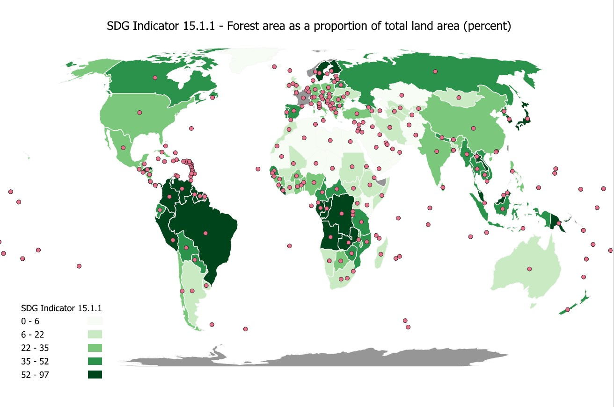
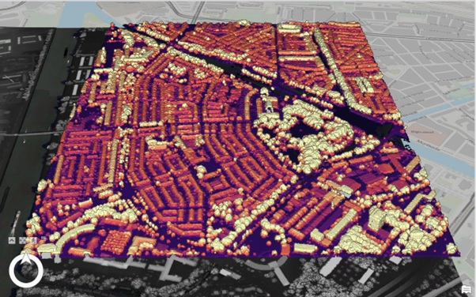

Introducing GIS
GIS (geographic information system) is a system which systematically analyses and visualises data. It can be used in many ways, for instance: urban/city planning, visualising SDG indicators (which can also include environment management or analysis/monitoring of vegetation), land classification, spatial recognition. Throughout this course, we have experimented with various softwares: Esri Online, ArcGIS Pro, QGIS, and Google Earth Engine Editor.
1 / 6

Choropleth map of SDG indicator 15.1.1
2 / 6
Kernel Density map of all trees in Utrecht
3 / 6
Supervised pixel based map of land cover classification in Utrecht
4 / 6

REM of the river, Maas, through Roermond
5 / 6
Map showing GPP/ha/year in Bali using Google Earth Engine
6 / 6

3D map of Lombok, Utrecht using LiDAR data